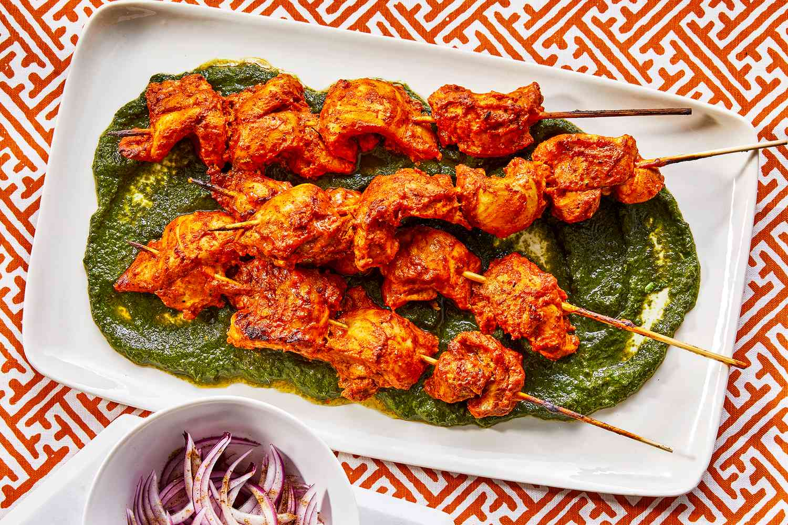
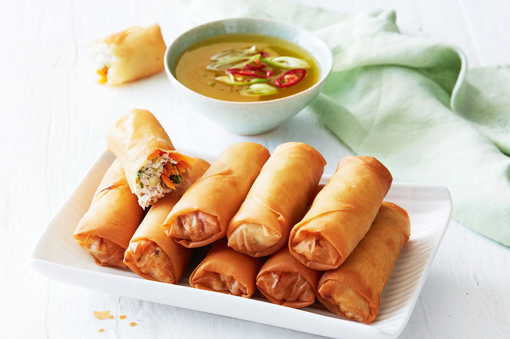
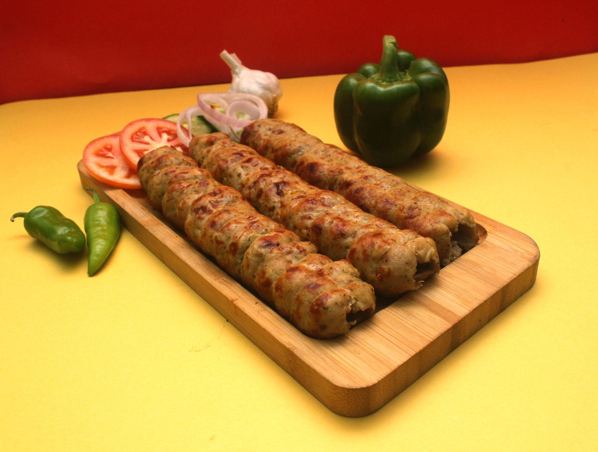
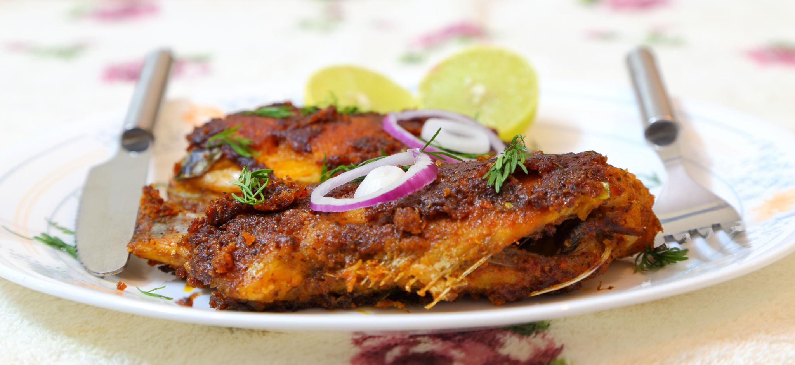
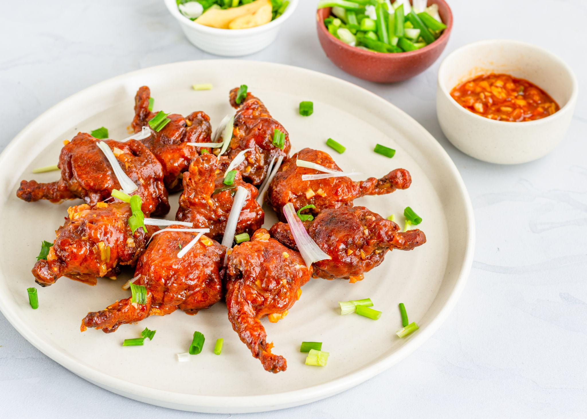
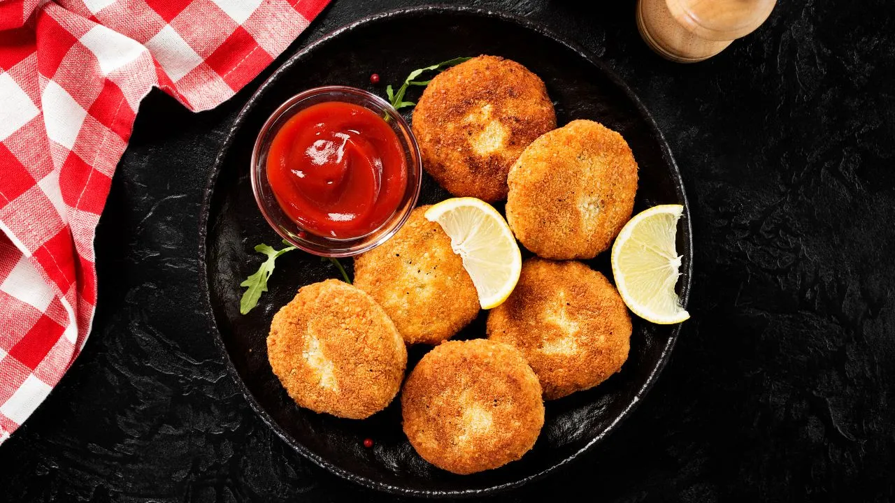

Chicken Tikka

Ingredients
- 250 g boneless chicken
- 1/2 cup yogurt
- 1 tsp ginger garlic paste
- 1 tsp red chili powder
- 1/2 tsp turmeric
- 1 tsp garam masala
- 1 tbsp lemon juice
- 1 tbsp oil
- Salt to taste
How to make Chicken Tikka
- Mix yogurt, ginger garlic paste, spices, lemon juice, and oil.
- Add chicken pieces and coat well.
- Marinate for 30–60 minutes.
- Thread chicken on skewers.
- Grill in oven or pan cook until slightly charred.
- Serve hot with mint chutney.
Chicken Spring Roll

Ingredients
- 10 spring roll wrappers
- 1 cup shredded chicken
- 1/2 cup cabbage
- 1/2 cup carrot
- 1 tsp garlic
- 1 tsp soy sauce
- 1/2 tsp black pepper
- Salt to taste
- Oil for frying
How to make Spring Roll
- Heat oil and sauté garlic.
- Add chicken, cabbage, and carrot.
- Add soy sauce, pepper, and salt.
- Cook for 2–3 minutes and cool.
- Place filling in wrapper and roll tightly.
- Deep fry until golden brown.
- Serve with chili sauce.
Chicken Seekh Kabab

Ingredients
- 250 g minced chicken
- 1 onion finely chopped
- 1 tsp ginger garlic paste
- 1 tsp chili powder
- 1/2 tsp garam masala
- 2 tbsp coriander leaves
- Salt to taste
- 1 tbsp oil
How to make Chicken Seekh Kabab
- Mix minced chicken with onion and spices.
- Add coriander leaves and mix well.
- Shape mixture around skewers.
- Brush with oil.
- Grill or cook in a pan until cooked.
- Serve with onion rings and lemon.
Fish Fry

Ingredients
- 4 fish fillets
- 1 tsp ginger garlic paste
- 1 tsp red chili powder
- 1/2 tsp turmeric
- 1 tsp lemon juice
- 2 tbsp rice flour
- Salt to taste
- Oil for frying
How to make Fish Fry
- Mix spices, lemon juice, and salt.
- Apply marinade on fish.
- Marinate for 20 minutes.
- Coat lightly with rice flour.
- Shallow fry until crispy.
- Serve with lemon wedges.
Chicken Lollipop

Ingredients
- 8 chicken wings
- 1 tbsp ginger garlic paste
- 1 tsp chili powder
- 2 tbsp cornflour
- 2 tbsp maida
- 1/2 tsp black pepper
- Salt to taste
- Oil for deep frying
How to make Chicken Lollipop
- Mix chicken with ginger garlic paste and spices.
- Add cornflour and maida.
- Coat chicken evenly.
- Heat oil for frying.
- Deep fry until crispy and golden.
- Serve hot with schezwan sauce.
Chicken Cutlet

Ingredients
- 1 cup boiled shredded chicken
- 1 boiled potato
- 1 tsp ginger garlic paste
- 1 tsp chili powder
- 2 tbsp breadcrumbs
- 2 tbsp coriander leaves
- Salt to taste
- Oil for shallow frying
How to make Chicken Cutlet
- Mash potato and mix with shredded chicken.
- Add spices, coriander, and breadcrumbs.
- Mix well and shape into patties.
- Heat oil in pan.
- Shallow fry until golden brown.
- Serve with ketchup or chutney.